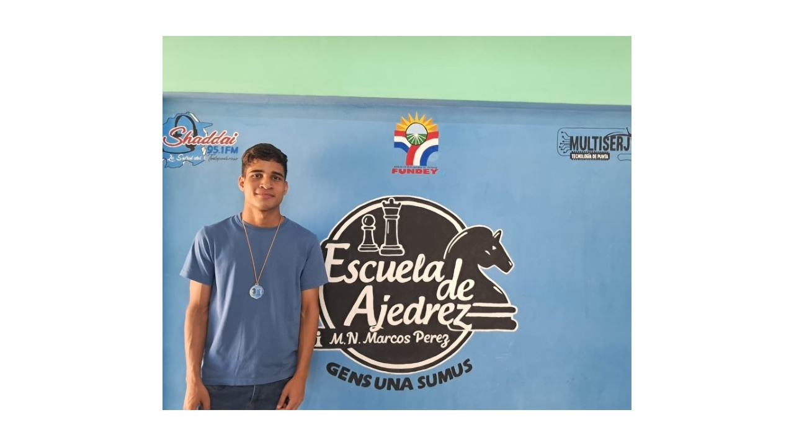

📍 San Felipe - Independencia

Nuestra sede cuenta con el respaldo de las mejores instituciones deportivas.
Referente en Yaracuy (San Felipe - Independencia). Más de 10 años formando campeones y aficionados. Método progresivo: iniciación, intermedio, avanzado y adultos. Aprendizaje estratégico, concentración y respeto.
Calle Bolívar, Centro Cívico Cultural, San Felipe, Independencia, Yaracuy.